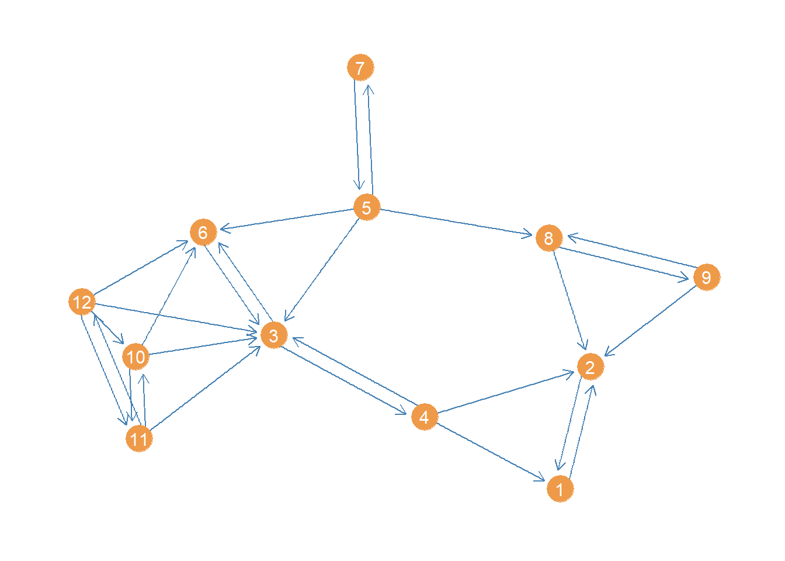
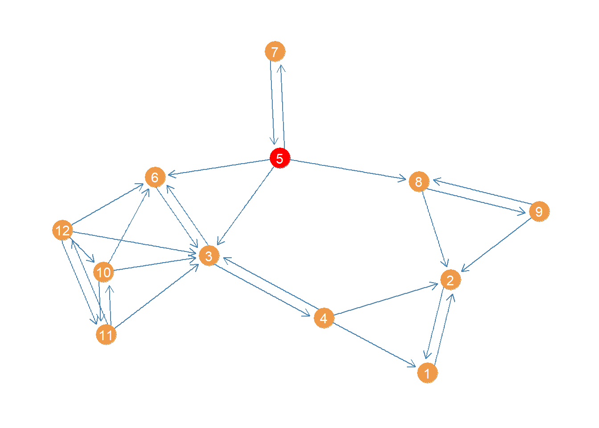
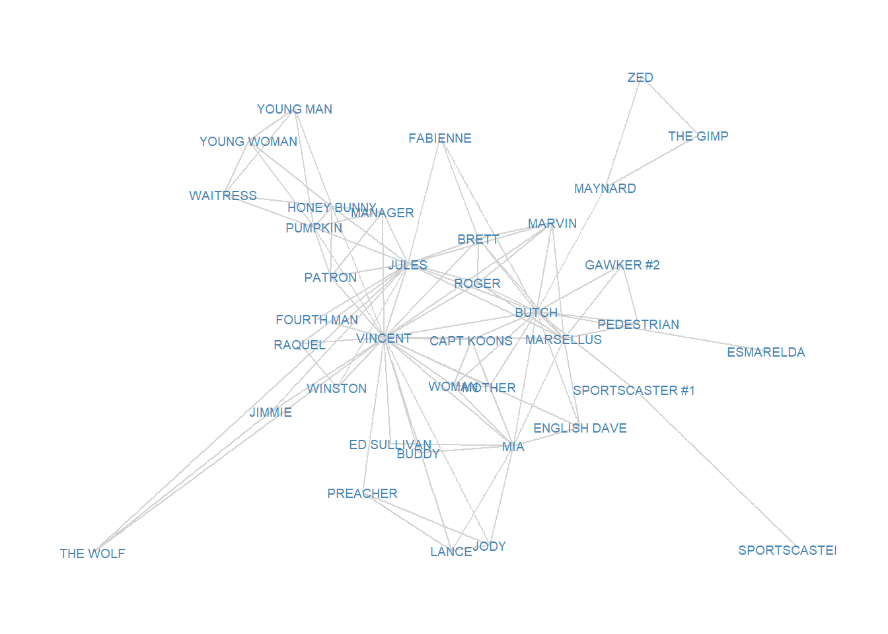
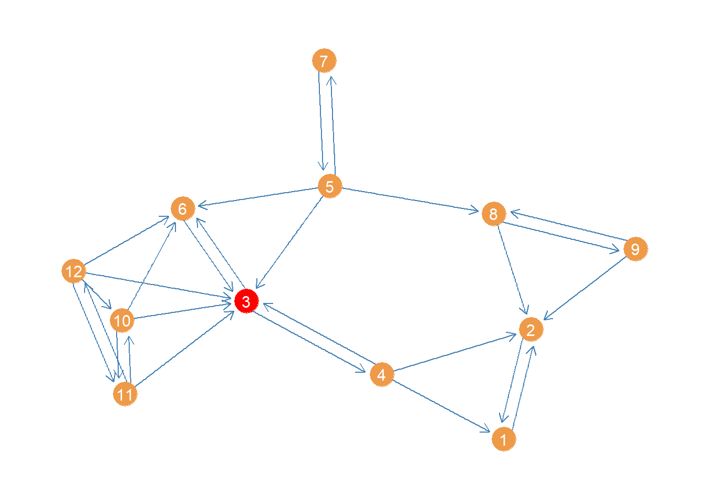
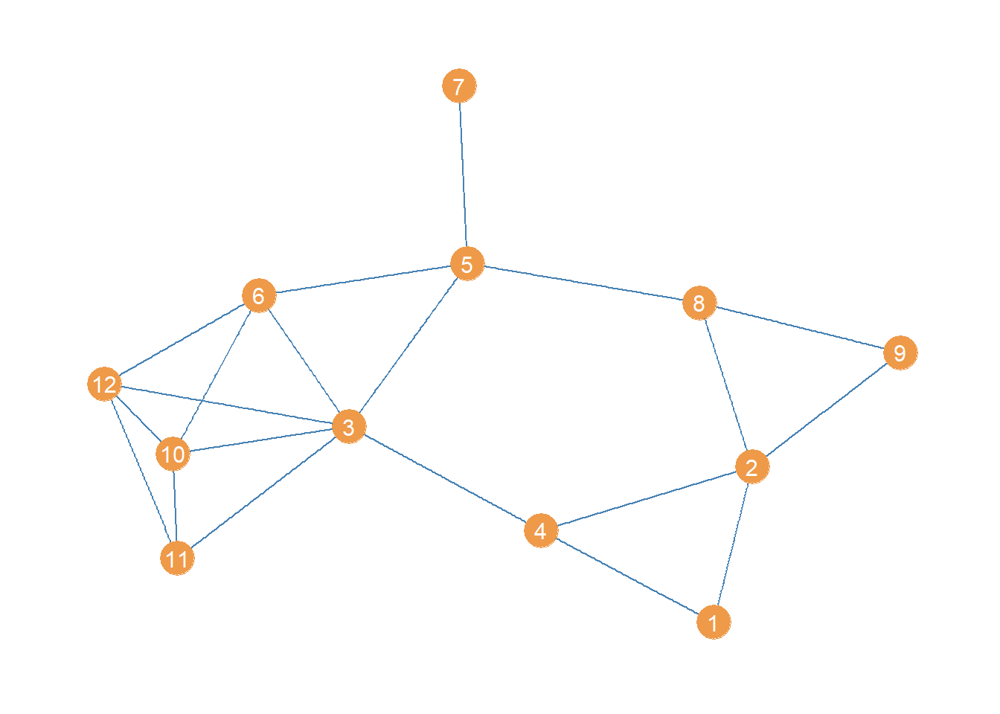
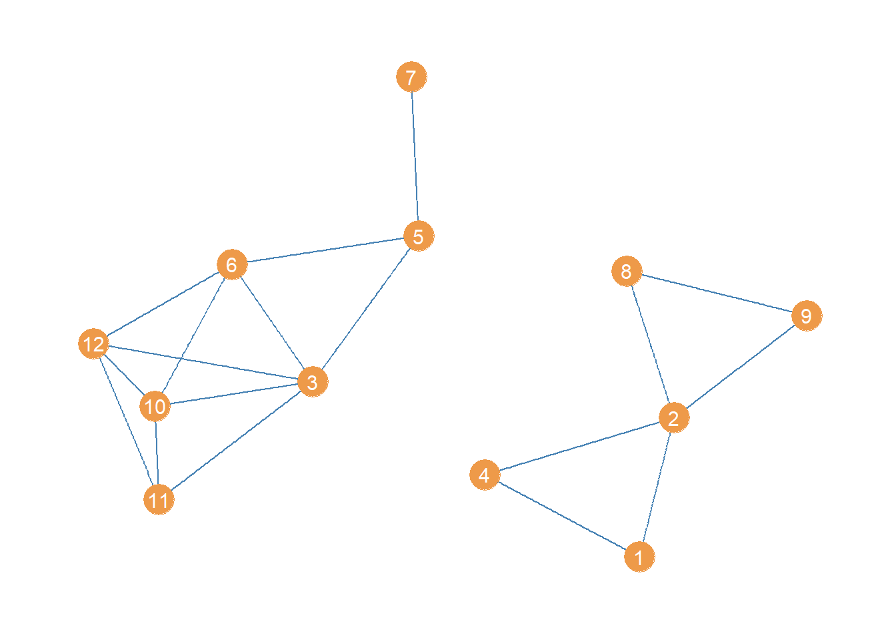

Centrality
In this handout we will go through the basic centrality metrics. Particularly, the “big three” according to Freeman (1979), namely, degree, closeness (in two flavors) and betweenness.
We first load our trusty Pulp Fiction data set from the networkdata package, which is an undirected graph of character scene co-appearances in the film:
Degree Cenntrality
Degree centrality is the simplest and most straightforward measure. In fact, we are already computed in handout 1 since it is the same as obtaining the graph’s degree sequence. So the igraph function degree would do it as we already saw.
Here we follow a different approach using the row (or column) sums of the graph’s adjacency matrix:
BRETT BUDDY BUTCH CAPT KOONS ED SULLIVAN
7 2 17 5 2
ENGLISH DAVE ESMARELDA FABIENNE FOURTH MAN GAWKER #2
4 1 3 2 3
HONEY BUNNY JIMMIE JODY JULES LANCE
8 3 4 16 4
MANAGER MARSELLUS MARVIN MAYNARD MIA
5 10 6 3 11
MOTHER PATRON PEDESTRIAN PREACHER PUMPKIN
5 5 3 3 8
RAQUEL ROGER SPORTSCASTER #1 SPORTSCASTER #2 THE GIMP
3 6 2 1 2
THE WOLF VINCENT WAITRESS WINSTON WOMAN
3 25 4 3 5
YOUNG MAN YOUNG WOMAN ZED
4 4 2 The igraph function as_adjancency_matrix doesn’t quite return a regular R matrix object, so we have to further coerce the resulting object into a numerical matrix containing zeroes and ones using the as.matrix function in line 2. Then we can apply the native rowSums function to obtain each node’s degree. Note that this is same output we got using the degree function before.
Indegree and Outdegree
The movie network is based on the relationship of co-appearance in a scene which by nature lacks any natural directionality (it’s a symmetric relation) and can therefore be represented in an undirected graph. The concepts of in and outdegree, by contrast, are only applicable to directed relations. So to illustrate them, we need to switch to a different source of data.
We pick an advice network which is a classical directed kind of (asymmetric) relation. I can give advice to you, but that doesn’t necessarily mean you can give advice to me. The networkdata package contains one such data set collected in the late 80s early 1990s in a New England law firm (see the description here), called law_advice:
+ 71/71 vertices, from d1a9da7:
[1] 1 2 3 4 5 6 7 8 9 10 11 12 13 14 15 16 17 18 19 20 21 22 23 24 25
[26] 26 27 28 29 30 31 32 33 34 35 36 37 38 39 40 41 42 43 44 45 46 47 48 49 50
[51] 51 52 53 54 55 56 57 58 59 60 61 62 63 64 65 66 67 68 69 70 71$status
[1] 1 1 1 1 1 1 1 1 1 1 1 1 1 1 1 1 1 1 1 1 1 1 1 1 1 1 1 1 1 1 1 1 1 1 1 1 2 2
[39] 2 2 2 2 2 2 2 2 2 2 2 2 2 2 2 2 2 2 2 2 2 2 2 2 2 2 2 2 2 2 2 2 2
$gender
[1] 1 1 1 1 1 1 1 1 1 1 1 1 1 1 1 1 1 1 1 1 1 1 1 1 1 1 2 1 2 1 1 1 1 2 1 1 1 2
[39] 2 1 1 1 2 2 1 2 1 2 1 1 2 1 1 1 1 1 2 1 2 2 2 1 1 2 1 1 2 1 2 1 2
$office
[1] 1 1 2 1 2 2 2 1 1 1 1 1 1 2 3 1 1 2 1 1 1 1 1 1 2 1 1 2 1 2 2 2 2 1 2 1 3 1
[39] 1 1 1 1 1 3 1 2 3 1 1 2 2 1 1 1 1 1 1 2 2 1 1 1 2 1 1 1 1 1 1 1 1
$seniority
[1] 31 32 13 31 31 29 29 28 25 25 23 24 22 1 21 20 23 18 19 19 17 9 16 15 15
[26] 15 13 11 10 7 8 8 8 8 8 5 5 7 6 6 5 4 5 5 3 3 3 1 4 3
[51] 4 4 10 3 3 3 3 3 2 2 2 2 2 2 2 1 1 1 1 1 1
$age
[1] 64 62 67 59 59 55 63 53 53 53 50 52 57 56 48 46 50 45 46 49 43 49 45 44 43
[26] 41 47 38 38 39 34 33 37 36 33 43 44 53 37 34 31 31 47 53 38 42 38 35 36 31
[51] 29 29 38 29 34 38 33 33 30 31 34 32 29 45 28 43 35 26 38 31 26
$practice
[1] 1 2 1 2 1 1 2 1 2 2 1 2 1 2 2 2 2 1 2 1 1 1 1 1 2 1 1 2 2 1 1 1 1 2 2 1 2 1
[39] 1 1 1 2 1 2 2 2 1 2 1 2 1 1 2 1 1 1 1 1 1 2 2 2 2 2 1 1 1 1 1 2 1
$law_school
[1] 1 1 1 3 2 1 3 3 1 3 1 2 2 1 3 1 1 2 1 1 2 3 2 2 2 3 1 2 3 3 2 3 3 2 3 3 3 2
[39] 1 1 2 2 2 1 3 2 3 3 2 2 3 3 3 3 3 2 2 3 2 2 3 2 2 2 3 3 2 3 3 2 2We can see that the graph has 71 vertices, and that there are various attributes associated with each vertex, like gender, age, seniority, status in the law firm, etc. We can query those attributes using the igraph function vertex_attr, which takes the graph object as input.
Subsetting the Graph According to a Node Attribute
To keep things manageable, we will restrict our analysis to partners. To do that we need to select the subgraph that only includes the vertices with value of 1 in the “status” vertex attribute. From the data description, we know the first 36 nodes (with value of 1 in the status attribute) are the law firm’s partners (the rest are associates). In igraph we can do this as using the subgraph function:
+ 36/36 vertices, from 10ef295:
[1] 1 2 3 4 5 6 7 8 9 10 11 12 13 14 15 16 17 18 19 20 21 22 23 24 25
[26] 26 27 28 29 30 31 32 33 34 35 36 [1] 1 1 1 1 1 1 1 1 1 1 1 1 1 1 1 1 1 1 1 1 1 1 1 1 1 1 1 1 1 1 1 1 1 1 1 1The first line just tells igraph to generate the subgraph containing the first 36 nodes (the partners). The subgraph function thus takes two main inputs: The graph object, and then a vector of node ids (or node labels) telling the function which nodes to select to create the node-induced subgraph.
Of course we already knew from the data description that the first 36 nodes where the partners. But let’s say we have a large data set and we don’t know which nodes are the partners. A smarter way of selecting a subgraph based on a node attribute is as follows:
+ 36/36 vertices, from 10f6ec1:
[1] 1 2 3 4 5 6 7 8 9 10 11 12 13 14 15 16 17 18 19 20 21 22 23 24 25
[26] 26 27 28 29 30 31 32 33 34 35 36The first line using the native R vector function which allowing us to subset a vector based on a logical condition. The function takes a vector followed by a logical condition as input, and returns the position of the vector elements that meet that condition. In this case, we took the vector of values for the attribute of status and selected the node ids where status is equal to 1. We then fed that vector to the subgraph function in line 2.
We could do this with any other attribute:
[1] 1 2 3 4 5 6 7 8 9 10 12 13 14 38 44+ 15/15 vertices, from 10fcfd3:
[1] 1 2 3 4 5 6 7 8 9 10 11 12 13 14 15Here we selected the subgraph (called “og”, get it, get it) formed by the subset of nodes over the age of 50 at the firm. The values of the vector older tell us which of the 71 members meet the relevant condition.
Computing in and outdegree
OK, going back to the partners subgraph, we can now create our (asymmetric) adjacency matrix and compute the row and column sums:
[1] 3 7 7 17 4 0 4 2 3 7 5 18 11 13 10 19 17 5 21 10 9 12 9 16 8
[26] 22 18 22 13 15 16 9 15 6 15 7 [1] 18 17 8 14 10 17 4 8 10 6 11 14 14 12 15 13 21 7 7 17 11 10 2 14 7
[26] 20 2 14 12 11 8 13 2 16 8 2Note that in contrast to the undirected case the row and column sums give you two different sets of numbers. The row sums provide the directed graph’s outdegree set (number of outgoing links incident to each node), and the column sums provide the graph’s indegree set (number of incoming links incident to each node). So if you are high in the first vector, you are an advice giver (perhaps indicating informal status or experience) and if you are high in the second you are advice taker.
Of course igraph has a dedicated function for this, which is just our old friend degree with an extra option mode, indicating whether you want the in or outdegrees:
[1] 3 7 7 17 4 0 4 2 3 7 5 18 11 13 10 19 17 5 21 10 9 12 9 16 8
[26] 22 18 22 13 15 16 9 15 6 15 7 [1] 18 17 8 14 10 17 4 8 10 6 11 14 14 12 15 13 21 7 7 17 11 10 2 14 7
[26] 20 2 14 12 11 8 13 2 16 8 2Note that the graph attributes are just vectors of values, and can be accessed from the graph object using the $ operator attached to the V() function as we did above.
So if we wanted to figure out the correlation between some vertex attribute and in or out degree centrality, all we need to do is correlate the two vectors:
Which tells us that at least in this case, younger partners are more sought after as sources of advice than older partners.
Closeness Centrality
Recall that the closeness centrality is defined as the inverse of the sum of shortest paths from each node to every other node. That means that to compute it, we first need to calculate the shortest path matrix. Then, we sum the rows (or columns) and then we obtain the inverse to get the closeness of each node:
BRETT BUDDY BUTCH CAPT KOONS ED SULLIVAN
0.0125 0.0108 0.0143 0.0125 0.0108
ENGLISH DAVE ESMARELDA FABIENNE FOURTH MAN GAWKER #2
0.0105 0.0070 0.0096 0.0104 0.0097
HONEY BUNNY JIMMIE JODY JULES LANCE
0.0114 0.0093 0.0093 0.0132 0.0093
MANAGER MARSELLUS MARVIN MAYNARD MIA
0.0111 0.0104 0.0103 0.0098 0.0115
MOTHER PATRON PEDESTRIAN PREACHER PUMPKIN
0.0125 0.0111 0.0097 0.0097 0.0114
RAQUEL ROGER SPORTSCASTER #1 SPORTSCASTER #2 THE GIMP
0.0105 0.0125 0.0096 0.0057 0.0073
THE WOLF VINCENT WAITRESS WINSTON WOMAN
0.0056 0.0139 0.0083 0.0105 0.0125
YOUNG MAN YOUNG WOMAN ZED
0.0083 0.0083 0.0073 Of course, we could have just used the available function in igraph and computed the closeness centrality directly from the graph object using the function closeness:
BRETT BUDDY BUTCH CAPT KOONS ED SULLIVAN
0.0125 0.0108 0.0143 0.0125 0.0108
ENGLISH DAVE ESMARELDA FABIENNE FOURTH MAN GAWKER #2
0.0105 0.0070 0.0096 0.0104 0.0097
HONEY BUNNY JIMMIE JODY JULES LANCE
0.0114 0.0093 0.0093 0.0132 0.0093
MANAGER MARSELLUS MARVIN MAYNARD MIA
0.0111 0.0104 0.0103 0.0098 0.0115
MOTHER PATRON PEDESTRIAN PREACHER PUMPKIN
0.0125 0.0111 0.0097 0.0097 0.0114
RAQUEL ROGER SPORTSCASTER #1 SPORTSCASTER #2 THE GIMP
0.0105 0.0125 0.0096 0.0057 0.0073
THE WOLF VINCENT WAITRESS WINSTON WOMAN
0.0056 0.0139 0.0083 0.0105 0.0125
YOUNG MAN YOUNG WOMAN ZED
0.0083 0.0083 0.0073 Once we have the closeness centrality values, we are interested in who are the top nodes. The following code creates a table with the top five:
library(kableExtra)
close2 <- sort(close2, decreasing = TRUE)
close2 <- data.frame(close2[1:5])
kbl(close2, format = "pipe", align = c("l", "c"),
col.names = c("Character", "Closeness"),
caption = "Top Five Closeness Characters in Pulp Fiction Network.") %>%
kable_styling(bootstrap_options = c("hover", "condensed", "responsive"))| Character | Closeness |
|---|---|
| BUTCH | 0.0143 |
| VINCENT | 0.0139 |
| JULES | 0.0132 |
| BRETT | 0.0125 |
| CAPT KOONS | 0.0125 |
It makes sense that the three main characters are also the ones that are at closest distances from everyone else!
What about closeness centrality for a directed network? Let us see how this works using a subgraph of the advice network, this time selecting just women under the age of forty:
women <- which(V(law_advice)$gender == 2)
wg <- subgraph(law_advice, women)
young <- which(V(wg)$age < 40)
wg <- subgraph(wg, young)
V(wg)+ 12/12 vertices, from 11502b9:
[1] 1 2 3 4 5 6 7 8 9 10 11 12This network is small enough that a plot could be informative about its structure. Let us plot it using the package ggraph, a visualization package that follows the same principles as the ggplot grammar of graphics but for network graphs (see here).
#install.packages("ggraph")
library(ggraph)
p <- ggraph(wg, layout = 'auto')
p <- p + geom_edge_parallel(color = "steelblue", edge_width = 0.5,
arrow = arrow(length = unit(2.5, 'mm')),
end_cap = circle(4, 'mm'),
sep = unit(3, 'mm'))
p <- p + geom_node_point(aes(x = x, y = y), size = 8, color = "tan2")
p <- p + geom_node_text(aes(label = 1:vcount(wg)), size = 4, color = "white")
p <- p + theme_graph()
p
Now a question we might ask is who has the greatest closeness centrality in this advice network. We could proceed as usual and compute the geodesic distances between actors:
[,1] [,2] [,3] [,4] [,5] [,6] [,7] [,8] [,9] [,10] [,11] [,12]
[1,] 0 1 2 1 3 3 4 2 2 3 3 3
[2,] 1 0 2 1 2 3 3 1 1 3 3 3
[3,] 2 2 0 1 1 1 2 2 3 1 1 1
[4,] 1 1 1 0 2 2 3 2 2 2 2 2
[5,] 3 2 1 2 0 1 1 1 2 2 2 2
[6,] 3 3 1 2 1 0 2 2 3 1 2 1
[7,] 4 3 2 3 1 2 0 2 3 3 3 3
[8,] 2 1 2 2 1 2 2 0 1 3 3 3
[9,] 2 1 3 2 2 3 3 1 0 4 4 4
[10,] 3 3 1 2 2 1 3 3 4 0 1 1
[11,] 3 3 1 2 2 2 3 3 4 1 0 1
[12,] 3 3 1 2 2 1 3 3 4 1 1 0Note that this is not quite right. In igraph the default settings of the distance function treats the graph as undirected. So it doesn’t use the strict directed paths, but it just treats them all as semi-paths ignoring direction. That is why, for instance, it counts node 1 as being “adjacent” to node 4 even though there is only one incoming link from 4 to 1 and why the whole matrix is symmetric, when we know from just eyeballing the network that there is a lot of asymmetry in terms of who can reach who via directed paths.
To get the actual directed distance matrix, we need to specify the “mode” option, asking whether we want in or out paths. Here, let’s select out-paths:
[,1] [,2] [,3] [,4] [,5] [,6] [,7] [,8] [,9] [,10] [,11] [,12]
[1,] 0 1 Inf Inf Inf Inf Inf Inf Inf Inf Inf Inf
[2,] 1 0 Inf Inf Inf Inf Inf Inf Inf Inf Inf Inf
[3,] 2 2 0 1 Inf 1 Inf Inf Inf Inf Inf Inf
[4,] 1 1 1 0 Inf 2 Inf Inf Inf Inf Inf Inf
[5,] 3 2 1 2 0 1 1 1 2 Inf Inf Inf
[6,] 3 3 1 2 Inf 0 Inf Inf Inf Inf Inf Inf
[7,] 4 3 2 3 1 2 0 2 3 Inf Inf Inf
[8,] 2 1 Inf Inf Inf Inf Inf 0 1 Inf Inf Inf
[9,] 2 1 Inf Inf Inf Inf Inf 1 0 Inf Inf Inf
[10,] 3 3 1 2 Inf 1 Inf Inf Inf 0 1 2
[11,] 3 3 1 2 Inf 2 Inf Inf Inf 1 0 1
[12,] 3 3 1 2 Inf 1 Inf Inf Inf 1 1 0This is better but introduces a problem. The directed graph is not strongly connected, so it means that some nodes cannot reach other ones via a directed path of any length. That means that the geodesic distances from a node to an unreachable node is coded as “infinite” (Inf). The problem with infinity is that it gets in the way of calculatinng sums of distances, a requirement for the closeness centrality.
Adding infinity to a number just returns infinity so all the rows with at least one “Inf” in the distance matrix get an Inf for the row sum. In this case that’s all of them. A bummer.
Harmonic Centrality
But dont’ worry there’s a patch. It is called the harmonic centrality, a kind of closeness centrality that works whether you are working with connected or disconnected graphs (or in the case of directed graphs regardless of whether the graph is strongly or weakly connected), and therefore regardless of whether the geodesic distance matrix contains Infs. The main difference is that instead of calculating the inverse of the sum of the distances for each node, we calculate the sum of the inverses:
[,1] [,2] [,3] [,4] [,5] [,6] [,7] [,8] [,9] [,10] [,11] [,12]
[1,] 0.00 1.00 0.0 0.00 0 0.0 0 0.0 0.00 0 0 0.0
[2,] 1.00 0.00 0.0 0.00 0 0.0 0 0.0 0.00 0 0 0.0
[3,] 0.50 0.50 0.0 1.00 0 1.0 0 0.0 0.00 0 0 0.0
[4,] 1.00 1.00 1.0 0.00 0 0.5 0 0.0 0.00 0 0 0.0
[5,] 0.33 0.50 1.0 0.50 0 1.0 1 1.0 0.50 0 0 0.0
[6,] 0.33 0.33 1.0 0.50 0 0.0 0 0.0 0.00 0 0 0.0
[7,] 0.25 0.33 0.5 0.33 1 0.5 0 0.5 0.33 0 0 0.0
[8,] 0.50 1.00 0.0 0.00 0 0.0 0 0.0 1.00 0 0 0.0
[9,] 0.50 1.00 0.0 0.00 0 0.0 0 1.0 0.00 0 0 0.0
[10,] 0.33 0.33 1.0 0.50 0 1.0 0 0.0 0.00 0 1 0.5
[11,] 0.33 0.33 1.0 0.50 0 0.5 0 0.0 0.00 1 0 1.0
[12,] 0.33 0.33 1.0 0.50 0 1.0 0 0.0 0.00 1 1 0.0Note that in this matrix of inverse distances, the closest (adjacent) nodes get the maximum score of one, and nodes farther apart when smaller scores (approaching zero). More importantly, those pesky Infs disappear! Unreachable directed pairs of nodes get the lowest score, corresponding to \(1/\infty = 0\). Turns out the mathematics of infinity weren’t our enemy after all.
Also note that the reachability relation expressed in this matrix is asymmetric: So node 4 and reach node 1 (there is a directed tie from 4 to 1), but node 1 cannot reach 4. This is precisely what we want.
Once we have this matrix of inverse distances, we can then we can compute the harmonic centrality the same way as regular closeness by adding up the row scores for each node and dividing by the number of nodes minus one (to get the average):
[1] 0.09 0.09 0.27 0.32 0.53 0.20 0.34 0.23 0.23 0.42 0.42 0.47We can see that the highest harmonic closeness centrality node is 5, followed by 12. Here’s a plot of the network highlighting the highest harmonic (closeness) centrality node.
col <- rep("tan2", vcount(wg)) #creating node color vector
col[which(d.harm == max(d.harm))] <- "red" #changing color of max centrality node to red
p <- p + geom_node_point(aes(x = x, y = y), size = 8, color = col)
p <- p + geom_node_text(aes(label = 1:vcount(wg)), size = 4, color = "white")
p
Of course, igraph has a built in function to calculate the harmonic centrality called (you guessed it) harmonic_centrality:
[1] 0.09 0.09 0.27 0.32 0.53 0.20 0.34 0.23 0.23 0.42 0.42 0.47Which gives us the same results.
Betweenness
We finally come to betweenness centrality. Recall that the key conceptual distinction between closeness and betweenness according to Freeman (1979) is that between (pun intended) the capacity to reach others quickly (e.g., via the shortest paths) and the capacity to intermediate among those same paths. High betweenness nodes control the flow of information in the network between other nodes.
This is evident in the way betweenness is calculated. Recall that the betweenness of a node k relative to any pair of nodes i and j in the network is simply:
\[ \frac{\sigma_{i(k)j}}{\sigma_{ij}} \]
Where the denominator of the fraction (\(\sigma_{ij}\)) is a count of the total number of shortest paths that start and end with nodes i and j and the numerator of the fraction (\(\sigma_{i(k)j}\)) is the subset of those paths that include node k as an inner node.
As Freeman (1979) also notes because this is a ratio, it can range from zero to one, with everything in between. As such the betweenness centrality of a node relative to any two others has an intuitive interpretation as a probability, namely the probability that if you send something from i to j it has to go through k. This probability is 1.0 if k stands in every shortest path between i and j and zero if they stand in none of the shortest paths indirectly connecting i and j.
The betweenness of a given node is just the sum all of these probabilities across every pair of nodes in the graph for each node:
\[ \sum_{i \neq j, i \neq n, j \neq v} \frac{\sigma_{i(k)j}}{\sigma_{ij}} \]
Below we can see a point and line diagram of the undirectd Pulp Fiction network we have been working with.

We should expect a character to have high betweenness in this network to the extent that they appear in scenes with characters who themselves don’t appear in any scenes together, thus inter-mediating between different parts of the story. Characters who only appear in one scene with some others (like The Wolf or The Gimp) are likely to be low in betweenness.
Let’s create a top ten table of betweenness for the Pulp Fiction network. We use the igraph function betweenness to calculate the scores:
pulp.bet <- betweenness(g)
top.5.bet <- sort(pulp.bet, decreasing = TRUE)[1:10]
kbl(round(top.5.bet, 2), format = "pipe", align = c("l", "c"),
col.names = c("Character", "Betweenness"),
caption = "Top Five Betweenness Characters in Pulp Fiction Network.") %>%
kable_styling(bootstrap_options = c("hover", "condensed", "responsive"))| Character | Betweenness |
|---|---|
| BUTCH | 275.52 |
| VINCENT | 230.19 |
| JULES | 142.11 |
| MIA | 76.68 |
| MAYNARD | 70.00 |
| HONEY BUNNY | 49.97 |
| PUMPKIN | 49.97 |
| SPORTSCASTER #1 | 36.00 |
| BRETT | 29.85 |
| PREACHER | 28.23 |
Unsurprisingly, the top four characters are also the highest in betweenness. Somewhat surprisingly, the main antagonist of the story (the pawn shop owner) is also up there. After that we see a steep drop in the bottom five of the top ten.
Now let us examine betweenness centrality in our directed women lawyers advice network:
[1] 0.0000000 3.0000000 16.3333333 11.0000000 7.0000000 0.0000000
[7] 0.0000000 5.0000000 0.0000000 0.3333333 1.0000000 0.3333333Here we see that node 3 is the highest in betweenness, pictured below:

This result makes sense. Node 3 intermediates all the connections linking the tightly knit group of nodes on the left side (6, 10, 11, 12) with the rest of the network. Also if nodes 5 and 7 need to pass something along to the rest, they have to use 3 at least half time. Node 4 also needs 3 to reach 6. This result nicely illustrates the difference between closeness and betweenness.
Edge Betweenness
Edge betweenness is defined in similar fashion as node betweenness:
\[ \sum_{i \neq j} \frac{\sigma_{i(e)j}}{\sigma_{ij}} \]
This tells us that the betweenness of an edge e is the sum of the ratios of the number of times that edge appears in the middle of a shortest path connecting every pair of nodes in the graph i and j divided by the total number of shortest paths linking each pair of nodes.
Like before, this is a probability: Namely, that if you send something–using a shortest path–from any node i to any other node j it has to go through edge e. The resulting scores is the sum of these probabilities across every possible pair.
For this example, we will work with a simplified version of the women lawyers advice network, in which we transform it into an undirected graph. We use the igraph function as.undirected for that:
The “collapse” value in the “mode” argument tells igraph to take every edge and transform it into an undirected one, collapsing two mutual edges into a single edge and removing the arrows from the one-sided ones.
The resulting graph looks like this:

Looking at this point and line plot of the women lawyers advice network which edge do you think has the top betweenness? Well no need to figure that out via eyeballing! We can just use the igraph function edge_betweenness:
We can then create a table of the top ten edges ordered by betweenness:
edges <- as_edgelist(wg) #creating an edgelist
etab <- data.frame(edges, bet = round(w.ebet, 2)) #adding bet. scores to edgelist
etab <- etab[order(etab$bet, decreasing = TRUE), ] #ordering by bet.
kbl(etab[1:10, ], format = "pipe", align = c("l", "l", "c"),
col.names = c("i", "j", "Edge Bet."), row.names = FALSE,
caption = "Edges Sorted by Betweenness in the Women Lawyers Advice Network") %>%
kable_styling(bootstrap_options = c("hover", "condensed", "responsive"))| i | j | Edge Bet. |
|---|---|---|
| 3 | 4 | 19.17 |
| 5 | 8 | 15.83 |
| 3 | 5 | 13.67 |
| 5 | 7 | 11.00 |
| 2 | 4 | 9.17 |
| 3 | 11 | 8.33 |
| 5 | 6 | 8.17 |
| 1 | 4 | 7.00 |
| 2 | 8 | 6.50 |
| 8 | 9 | 6.33 |
Not surprisingly, the top edges are the ones linking nodes 3 and 4 and nodes 5 and 8.
High betweenness edges are likely to function as bridges being the only point of indirect connectivity between most nodes in the social structure. That means that an easy way to disconnect a graph is to remove the bridges (Girvan and Newman 2002).
In igraph we can produce an edge deleted subgraph of an original graph using the “minus” operator, along with the edge function like this:
The first line creates a new graph object (a subgraph) which equals the original graph minus the edge linking nodes 3 and 4. The second line takes this last subgraph and further deletes the edge linking nodes 5 and 8.
The resulting subgraph, minus the high-betweenness edges, looks like:

Which is indeed disconnected!